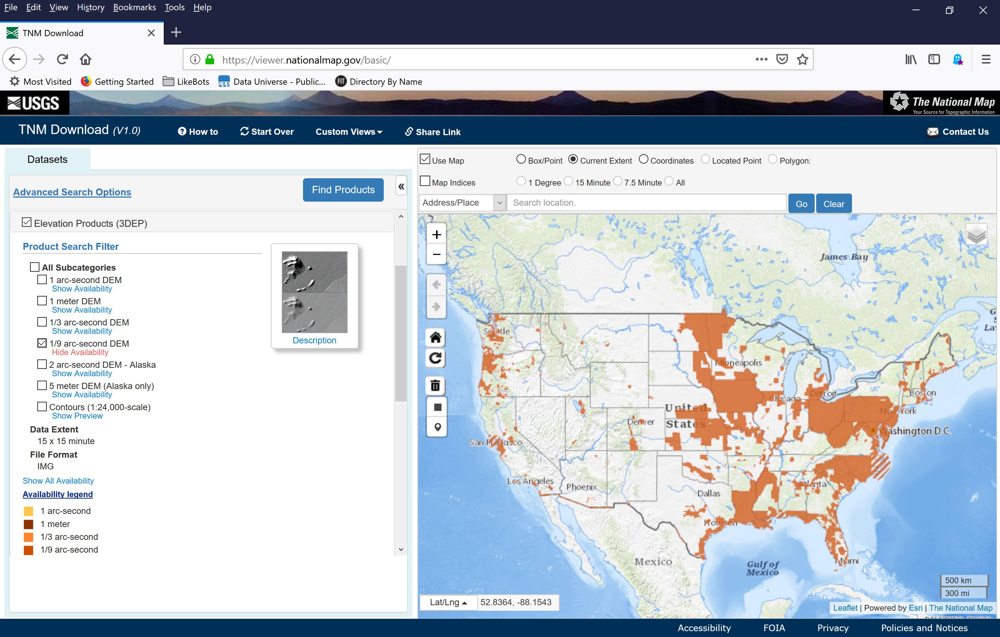
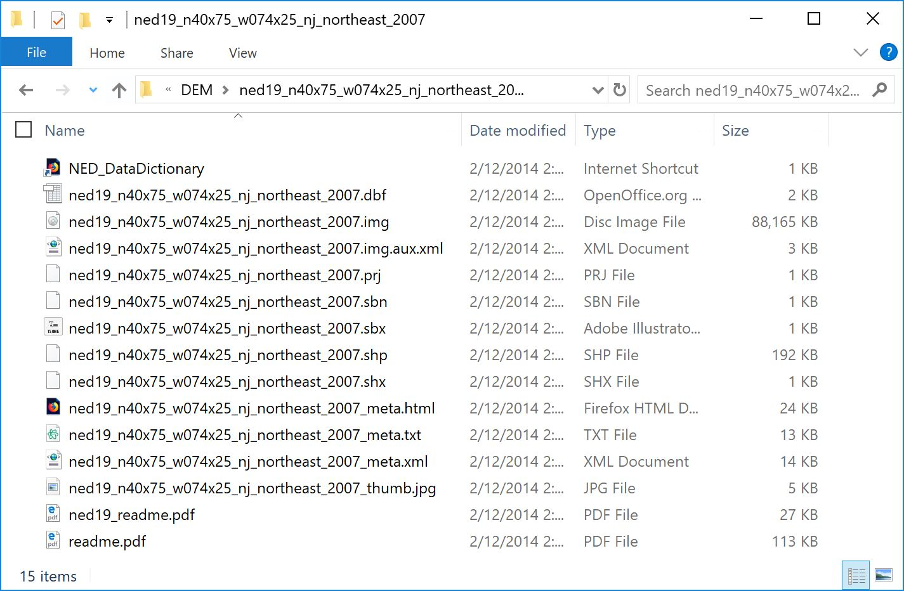
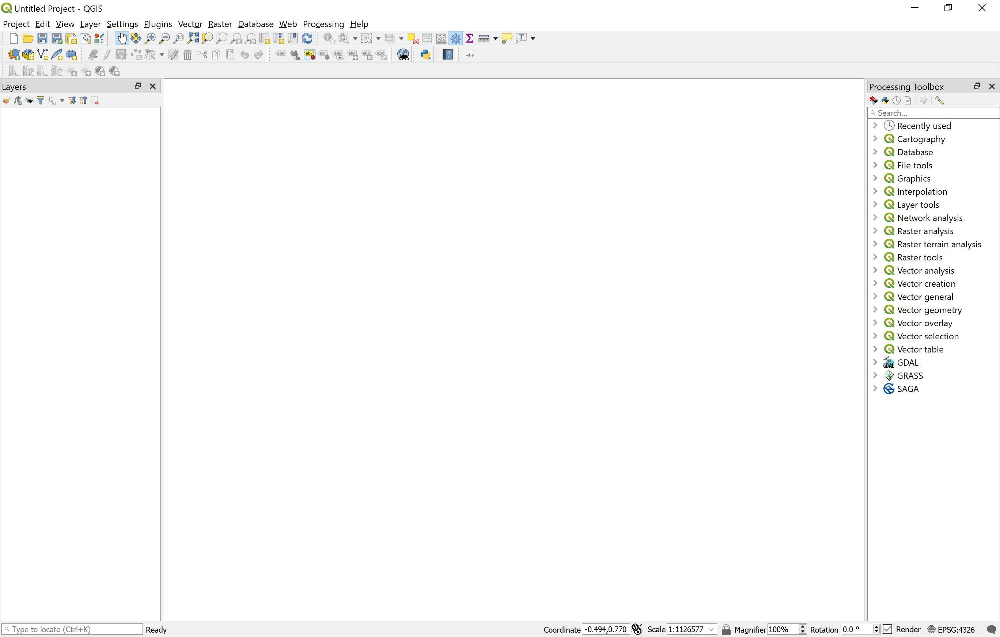

Project Description
The objective of this workshop is to go through all the steps invovled to create a 3D terrain model in Rhino using 3D Elevation Program (3DEP) data from United States Geological Survey (USGS), downloadable from The National Map. This workshop assumes you already know Rhino3D.
3DEP
3DEP is a branded product consist of a number of elevation products such as standard digital elevation models (DEM), Light Detection and Ranging (LIDAR) data, and Interferometric synthetic-aperture radar (IfSAR) data. This workshop will only cover the workflow for working with DEMs.
The National Map distributes standard DEMs in various resolutions. In USGS terminology, the DEM dataset can be separated into 2 categories - Seamless and Project-based. Seamless datasets are created from elevation data sourced from multiple technologies spanning decades. Although it is updated continually, positional and temporal accuracies might be an issue. It is best to use this dataset as reference only. The reason you might want to use this dataset is because it is the only thing available for your area of interest. Project-based data, on the other hand, are produced from LIDAR and IfSAR data, and they are the most up-to-date and accurate. However, the availability is limited.
The DEM datasets have a number of resolutions you can find: 1-meter, 1/9 arc-second, 5-meter, 1/3 arc-second, 1 arc-second, and 2 arc-second. These numbers indicate now big each pixel represents in real space. The datasets come as rasters or images, so 1-meter dataset would mean each pixel equates to 1x1 meter. 1/9 arc-second is roughly 3-meters, this dataset is only available for around 25% of the conterminous U.S.. 1/3 arc-second is approximately 10-meters and this dataset has full coverage of the 48 conterminous states, Hawaii, and U.S. territories.
Step 1
Download Data from The National Map
To begin this workshop, we will first go download our desired DEM data. Go to The National Map and check Elevation Product (3DEP), and check the desired resolution for your area of interest. If you choose 1-meter or 1/9 arc-second data, only IMG file format is available. If you choose 1/3 arc-second or larger data, you have a choice of ArcGrid, GridFloat, or IMG, we will stick to IMG for this session.
You can click on Show Availability to see if the data at your specific resolution is available for your area.

On the map, zoom to your area and make sure Current Extent is hightlighted, then PRESS Find Products, the web app will launch a search using the current extent as search parameter, and you will be presented with a list of search results.
On the results list, you can click on Footprint to see where the DEM tile is. In our case, Low Manhattan is splitted into 2 tiles, so we will need to download both tiles. Simply click on Download for each tile and save the files to a folder of your choice.

For each download there should be a .ZIP file, and you will find many files when unzipped so unzip them into a separate folder. In the long list of files, you should see one with an extension .IMG. If you are on Windows and do not see file extensions, please follow this link - Show file extension.

Step 2
QGIS
QGIS is an opensource GIS platform that has a very active community of developers constantly making updates and changes. It is a very powerful tool that rivals any commercial software. Download and install the current version, as of writing, the stable release is 3.4. As a suggestion, only install stable releases because you may encounter compatibility issues sometimes. We will not go through specific installation instructions, there should be plenty of online materials if you need assistance.
When you are done installing the software, launch QGIS. On the upper left corner, click Project > New, you should get a blank screen as the following.

Summary
What You have Learned
- How to create and assign value to a variable
- How to create and assign values a list
- How to create and assign values a list of lists
- How to bring data into Python as text or csv files
- How to create and use a counter
- How to write a basic function
- How to call a basic function
- Basic loop structure - how to use for-loops
- How to import packages in Python
- How to use basic functions of packages like Pandas, Plotly, BeautifulSoup
- How to create interactive plots with Plotly.